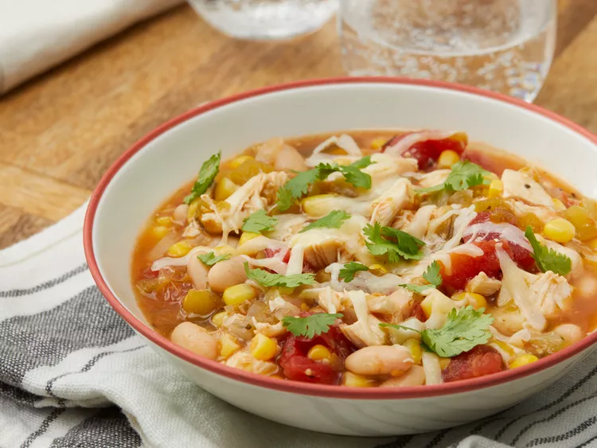

White Bean Chicken Chili

Description
This white bean chicken chili is great to make whenever there is leftover chicken around. This recipe was passed down from a friend and now is one of our favorites. Serve with these toppings for people to choose from: limes, cilantro, cheese, avocado, sour cream, and tortilla chips.
Ingredients
- 2 tablespoons vegetable oil
- 1 onion, chopped
- 2 cloves garlic, minced
- 1 can chicken broth
- 1 can tomatillos, drained and chopped
- 1 can diced tomatoes
- 1 can diced green chiles
- 1/2 teaspoon dried oregano
- 1/2 teaspoon ground coriander seed
- 1/4 ground cumin
- 1 pound diced, cubed chicken
- 1 can white beans
- 2 ears fresh corn, cut from cob
- Salt and pepper to taste
Directions
- Heat oil in a large pot and cook onion and garlic until soft.
- Stir in broth, then add tomatillos, tomatoes, and chiles. Stir together and season with oregano, coriander, and cumin. Bring to a boil, then simmer for 10 minutes.
- Add chicken, beans, and corn; simmer 5 minutes. Season with salt and pepper to taste.
- Serve hot and enjoy!